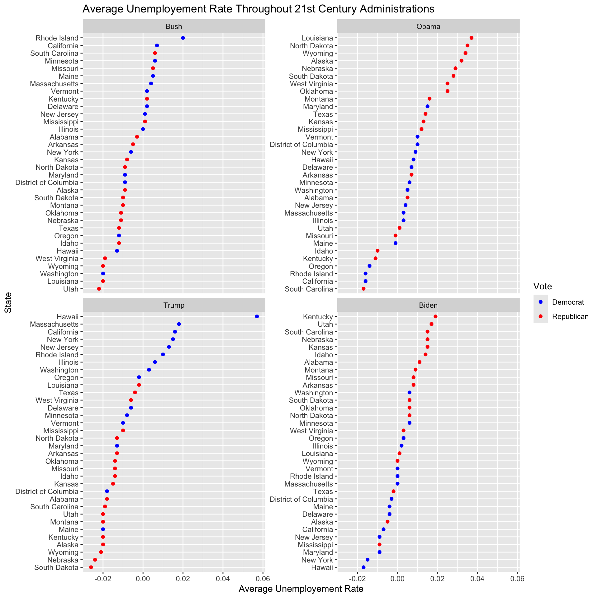
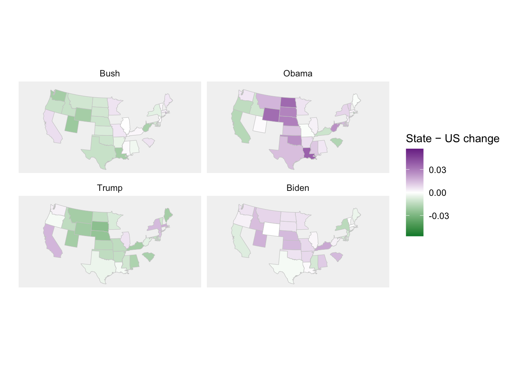
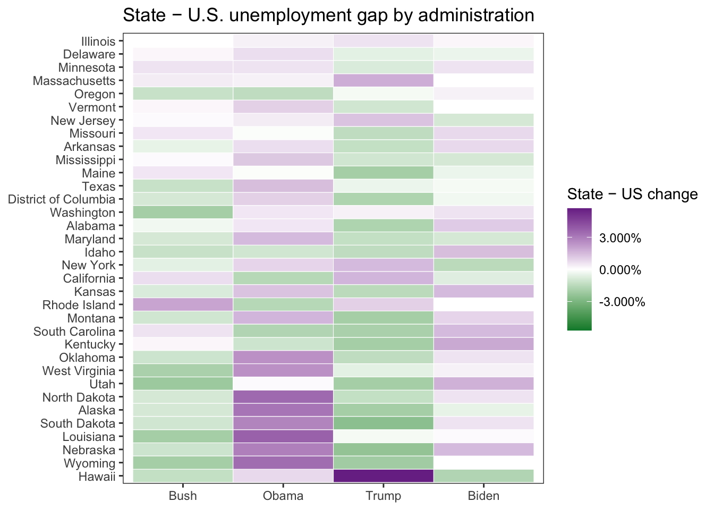

Question: Do states that consistently vote for the same political party in every presidential election since 2000 perform better economically under presidents from that party?
Unemployment Rate
Unemployment rate was the first metric that explored. Unemployment rate refers to the the percent of a workforce that does not work (https://www.oecd.org/en/data/indicators/unemployment-rate.html). Further, it is a metric to quantify the amount of able-working-of-age individuals who are actively seeking a job, that do not have a job.
To analyze this value across states, I created a variable “Difference from US.” Naturally, certain states have higher and lower unemployment rate due to population size, common industries, and various other factors related to the state. To avoid confounding variables, “Difference from US” standardizes each states unemployment rate in relation to the US. To quantify how a state does under a certain administration, I derived the difference which is their unemployment rate the last year that president was in office subtracted from the first year. For example, Biden’s years are 2021 to 2024. Similar to “Difference from US,” I found it more valuable to look at difference rather than average since certain states have inherently higher or lower unemployment rates.
The data for this section has been cleaned from a data set with each state’s unemployment rate, including the United States, to only the difference in unemployment rate from the US, State, the party the state voted for, part of the administration at the time, and the name of the president during that period.
Rows: 52 Columns: 26
── Column specification ────────────────────────────────────────────────────────
Delimiter: ","
chr (1): State
dbl (25): 2024, 2023, 2022, 2021, 2020, 2019, 2018, 2017, 2016, 2015, 2014, ...
ℹ Use `spec()` to retrieve the full column specification for this data.
ℹ Specify the column types or set `show_col_types = FALSE` to quiet this message.
Additionally, for this analysis, only states that have voted the exact same every election since 2000 will be considered.
There are 16 states that voted blue in every presidential election since 2000, and there are 20 states that have voted red in every presidential election since 2000.
Now, we can visualize how certain states unemployement rate change for each president compared to how the United States changed.
unemployement_us_avg <- unemployement_us_avg |>mutate(administration =factor( administration,levels =c("Bush", "Obama", "Trump", "Biden") )) |>mutate(State_in_panel =reorder_within(State, dif_from_us, administration))unemployement_us_avg |>ggplot(aes(x = dif_from_us, y = State_in_panel, color = vote)) +geom_point() +facet_wrap(~administration, scales ="free_y") +scale_color_manual(values =c("Republican"="red","Democrat"="blue","United States"="gray" )) +scale_y_reordered() +labs(y ="State", x ="Average Unemployement Rate",title ="Average Unemployement Rate Throughout 21st Century Administrations")

Note: a positive difference indicates the state’s unemployment rate did worse compares to the United States since difference is measured from United States - , and a lower unemployment rate is better.
Observations: Specifically with the last three presidents, there is a clear pattern between states that have better unemployment vs worse unemployment. Under Biden and Obama, the top handful of states that performed the worse compared to the US were Republican states. Comparatively, under Trump the states that performed the worse were democratic-voting states.
This mosaic plot looks at the frequency of states that perform better compared to the US average and worse categorized by how they voted and what political party the administration belonged to. The interesting contrast is looking between how states vote. Specifically, Republican states have the largest difference of performance depending on the part of the administration. For example, the far left rectangle shows republican states perform far better with republican presidents while the rectangle next to it shows they have much higher unemployment rates under democratic administration.
Comparatively, the two rectangles on the left (states that vote democrat) have very little difference between which party is the administration.
A note from the earlier dot plot, we are able to see how each type of state (democrat vs republican) perform, but we do not see if they are the same states or if there are geographic patterns.
mapping <- unemployement_us_avg |>mutate(state_lower =tolower(State))us_map <-map_data("state") mapping_joined <- mapping |>left_join(us_map, by =c("state_lower"="region"),relationship ="many-to-many")lim <-max(abs(mapping_joined$dif_from_us), na.rm =TRUE)four_maps <-ggplot(mapping_joined, aes(long, lat, group = group, fill = dif_from_us, rm.na=TRUE)) +geom_polygon(color ="white", linewidth =0.2) +coord_map("albers", lat0 =39, lat1 =45) +facet_wrap(~ administration, ncol =2) +scale_fill_gradient2(name ="State − US change",low ="darkorange", mid ="white", high ="darkgreen",midpoint =0,limits =c(-lim, lim),oob = squish, na.value ="grey90" ) +theme_minimal()+theme(panel.grid =element_blank(),axis.text =element_blank(),axis.ticks =element_blank() ) +labs(x ="", y ="")
four_maps

We see a slight pattern geographically with the middle of the country having clear color differences between administrations. Specifically, states like south and north Dakota, nebraska, Montana, Wyoming, and Oklahoma have strong differences between administrations.
This can be seen clearer with a heat map:
state_order <- unemployement_us_avg %>%group_by(State) %>%summarise(var_gap =sd(dif_from_us, na.rm =TRUE), .groups ="drop") %>%arrange(desc(var_gap)) %>%pull(State)lim <-max(abs(unemployement_us_avg$dif_from_us), na.rm =TRUE)difference_visual <-ggplot( unemployement_us_avg,aes(x = administration,y =factor(State, levels = state_order), # apply ordering herefill = dif_from_us)) +geom_tile(color ="white") +labs(title ="State − U.S. unemployment gap by administration",x =NULL, y =NULL) +scale_fill_gradient2(name ="State − US change",low ="darkgreen", mid ="white", high ="darkorange",midpoint =0,limits =c(-lim, lim),labels =label_percent(accuracy =0.001), # no rounding; or keep 0.1%na.value ="grey90" ) +theme_bw() +theme(panel.grid =element_blank())
difference_visual

Again, those middle states make up a majority of the top states with the most difference between administrations. Comparatively, many coastal cities have very little variation.
We can now try to derive potential geographical patterns to contextualize this polarization. We will look at industry impact.